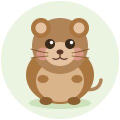

qvole
Fast tunnels over QUIC, burrowed through NATs.curl -fsSL https://get.qvole.dev | sh
pipe
Bidirectional stdin/stdout stream between two peers. Send files, stream data, or chain with Unix pipes.
tunnel
TCP port forwarding with -L and -R flags. Bind services to localhost and reach them on demand.
exec
Remote command execution. Run a shell, a script, or a single command on a peer machine.
relay
Run your own rendezvous relay. A single UDP port provides NAT hole punching and peer discovery.
Quick Start
Send a file
alice$ qvole pipe > out
# prints connection code, waits for bob
bob$ QVOLE_CODE=CODE qvole pipe < inPort forwarding
alice$ qvole tunnel -L 8080:localhost:80 -R 2222:localhost:22
bob$ QVOLE_CODE=CODE qvole tunnel --allow-tunnel
alice$ curl localhost:8080 # reaches bob's :80
bob$ ssh -p 2222 localhost # reaches alice's sshdRemote shell
alice$ qvole exec --cmd "script -q bash /dev/null"
bob$ QVOLE_CODE=CODE qvole execRun your own relay
relay$ qvole relay --listen :9009